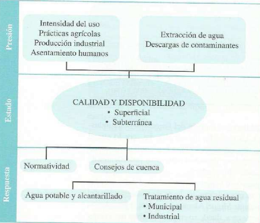

DESARROLLO SUSTENTABLE Y SOSTENIBLE
Desarrollo sustentable:El proceso evaluable mediante criterios e indicadores del carácter ambiental, económico y social que tiende a mejorar la calidad de vida y la productividad de las personas, que se funda en medidas apropiadas de preservación del equilibrio ecológico protección del ambiente y aprovechamiento de los recursos naturales, de manera que no se comprometa la satisfacción de las necesidades futuras
Desarrollo sostenible:Es el desarrollo que satisface las necesidades del presente, sin comprometer la capacidad para que las futuras generaciones puedan satisfacer sus propias necesidades.

INDICADORES DE SUSTENTABILIDAD
El índice de sustentabilidad ambiental constituye un resumen objetivo y ponderado, en determinada manera, de un conjunto de indicadores seleccionados para comparar resultados entre países o regiones.
CRITERIOS DE SUSTENTABILIDAD
Los criterios sustentables son aquellos parámetros o estándares que se utilizan para evaluar y tomar decisiones que promuevan la sustentabilidad en diferentes ámbitos, como pueden ser la gestión empresarial, el diseño de productos y servicios, la construcción de edificios, entre otros. Estos criterios se basan en la idea de que la sostenibilidad implica el uso responsable y equilibrado de los recursos naturales y la protección del medio ambiente, sin comprometer la capacidad de las generaciones futuras para satisfacer sus necesidades.
PARAMETROS DE DESEMPEÑO AMBIENTAL
Los parámetros básicos recomendados en el modelo de al OCDE que busca representar la realidad, se definen por PER = presión, estado, respuesta.
Presión: actividades antropogénicas que impactan el medio.
Estado: condición en que se encuentra el medio, en cuanto a su grado de preservación o deterioro ambiental.
Respuesta: las medidas tomadas por la sociedad en su conjunto para hacer frente a los problemas ambientales.
